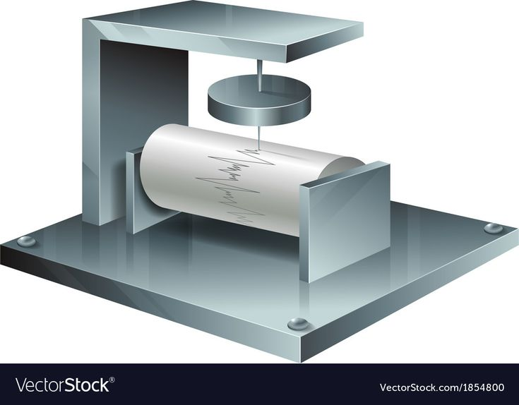
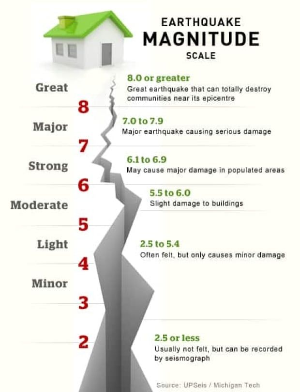
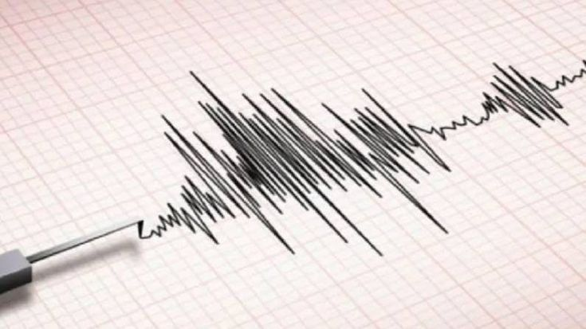

Measurement
Earthquakes are measured to determine both their strength and impact on people and structures, using two main parameters: magnitude and intensity.
Magnitude
Magnitude is a quantitative measure of the energy released at the earthquake's source. Seismographs record seismic waves. The Moment Magnitude Scale (Mw) is the most accurate scale for all sizes of earthquakes.
Intensity
Intensity describes the observed effects at specific locations, including impacts on people, buildings, and the environment. The Modified Mercalli Intensity (MMI) scale ranges from imperceptible tremors to catastrophic damage.
Importance
Guides structural engineering and safe building design. Helps urban planners identify high-risk areas.Supports emergency preparedness and early warning systems.Provides scientific data for research and disaster mitigation.
Seismic Zones
Plate Boundaries — There are three main types of plate boundaries...
- Convergent: Powerful quakes at subduction and collision zones.
- Divergent: Moderate events along oceanic ridges.
- Transform: Shallow quakes along strike-slip faults, like San Andreas.
Global Concentrations — Notable seismic belts include:
- Pacific Ring of Fire: Most active belt with frequent quakes and volcanoes.
- Alpine–Himalayan Belt: Stretches from Mediterranean to Himalayas.
- Intraplate Earthquakes: Occur inside plates on ancient fault lines.
- Volcanic Areas: Quakes caused by magma movement underground.